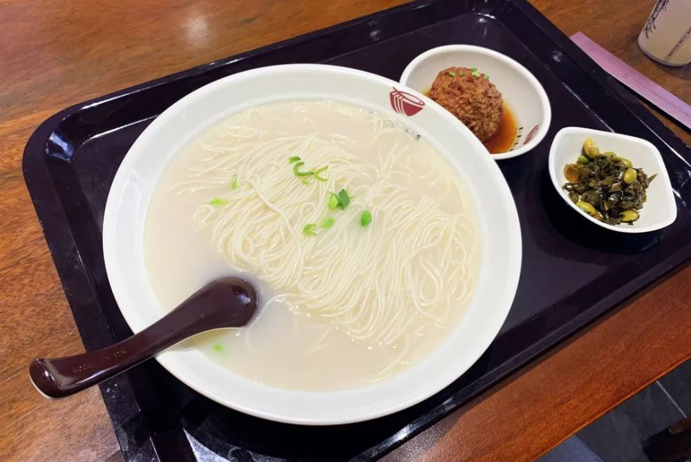

东台鱼汤面1983年被授予“江苏名特食品”，1985年入选《中国小吃食谱》。
以鲫鱼、鳝骨、猪大骨为主料，具有汤浓似乳、点滴成珠、鲜而不腥、肥而不腻的特点。
富含优质蛋白质及磷、钾、钙等多种营养素，具有润脾健胃、补虚疗肠，增强免疫力、通乳催奶作用
东台鱼汤面是江苏省东台市地方传统面食，属于苏菜，主要原料是面条，汤白汁浓，滴点成珠，清爽可口。
东台鱼汤面不仅味道鲜美，还具有较好的养生作用，能够润脾健胃，补虚疗肠。
经常食用，可强身健体。这是因为东台鱼汤面在汤料上，选择了野生鲫鱼、鳝鱼骨、猪骨等原料，具有高蛋白、低脂肪且富含活性钙和各种氨基酸的特点。
食后不上火、不口干，营养丰富，符合当代人所追求的膳食养生。民间常有“吃碗鱼汤面，赛过老寿星”之说。
东台陈皮酒已有900余年历史，相传为范仲淹在西溪任盐仓监时所创。北宋天圣元年（1023年），范公为治母病，寻得良药，乃采用精白糯米，辅以陈皮、党参多味中药，制成“八珍汤”，母服后见效。因“八珍汤”储放在甕中，始称“陈醅甕”，后以陈皮酒名世。
曾赴美国芝加哥、意大利维罗耶、日本东京国际博览会参展。多次在国内各种大赛中荣获金奖。2013年4月，东台陈皮酒被授予为“中华历史文化名酒”。
陈皮酒是江苏东台市传统名酒，据传源于北宋范仲淹等所制的药酒，始酿于清乾隆年间。选用上等精白糯米为原料，采用传统工艺配制而成，
配以名贵中药，营养丰富，含多种氨基酸。有“稠绵醇厚，香味独特，落口甘畅，余味悠然”之誉。并有理气开胃，舒筋活血之功能。
东台，是中国历史上人工栽培西瓜最早的地区之一。东台西瓜在宋代时期就已有种植，已有800多年的种植历史 。
东台西瓜之所以闻名于世，得益于东台独特的土壤、气候条件和优越的生态环境。
疏松的土壤结构、适宜的温光资源、充沛的雨水，适合东台西瓜种植，对东台西瓜生长发育和糖分积累极为有利，形成了独特的口感风味。
东台西瓜有晶黄果肉和鲜红瓜瓤两种类型，黄瓤西瓜特小凤、小兰等品种口感细腻多汁，是消暑解渴佳品；红瓤西瓜早春红玉糖度高、纤维少，更以其甘甜多汁、营养丰富的特点深受人们的喜爱。
长期以来，东台西瓜以其皮薄瓜甜成熟度高，刀一碰就裂，得名“东台爆炸瓜”。
东台市也成为首个“中国西瓜之乡”，拥有全国最大的大棚西瓜生产基地。如今，“东台西瓜”已经成为盐城东台的一张绿色名片。
富安酥儿饼是江苏省盐城市东台市富安镇的特产。东台富安酥儿饼具有入口酥松香脆，越嚼越美味的特点，用当地人的话来说，是“吃着打嘴也舍不得丢”。
相传，乾隆皇帝下江南品尝后，赞不绝口，一时酥儿饼美名远扬，甚至还成了富安人的骄傲。这酥儿饼是以面粉为主料，揉成面团以后再包入赤豆馅，最后经油煎而成。因为酥儿饼从里到外层层起酥，乍看活像一朵微开的金菊，故又叫“千层酥”。
酥儿饼除了包有用赤豆沙、桂花和蔗糖调制的甜馅外，还可包入用鲜肉、葱花、盐和味精调制的咸鲜馅，具有入口酥松香脆，越嚼越美味的特点，用当地人的话来说，是“吃着打嘴也舍不得丢”。